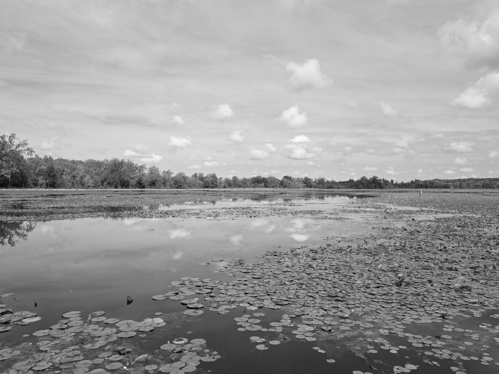
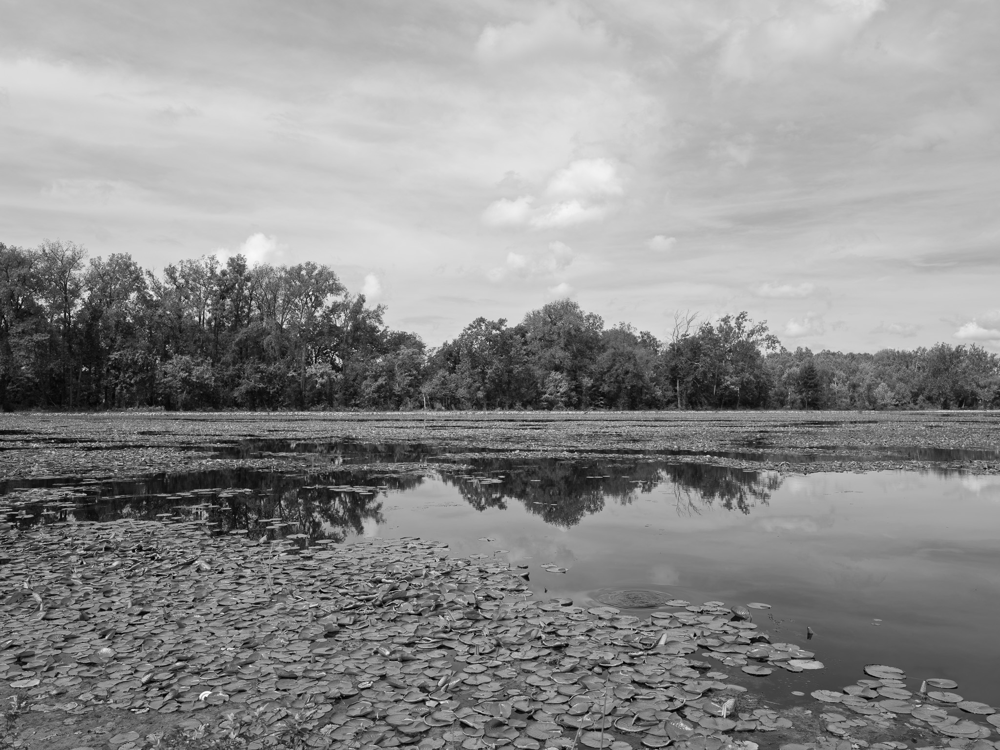
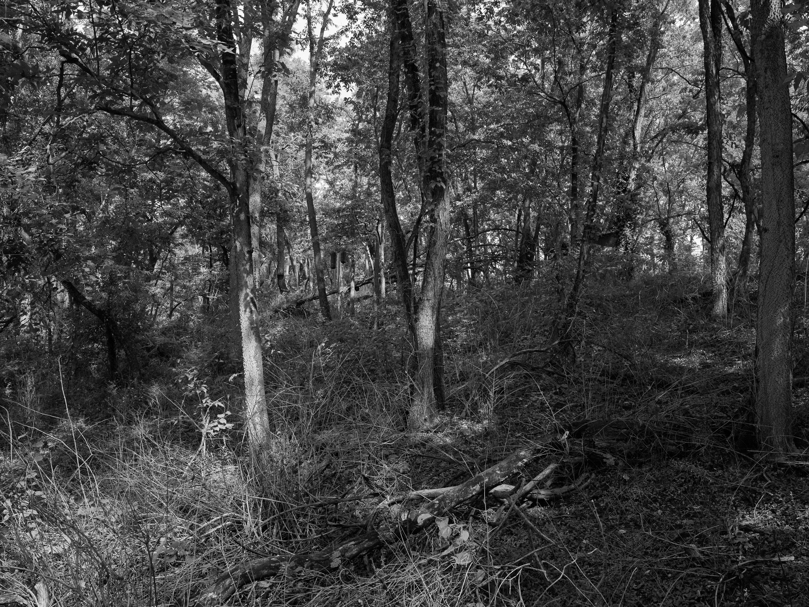
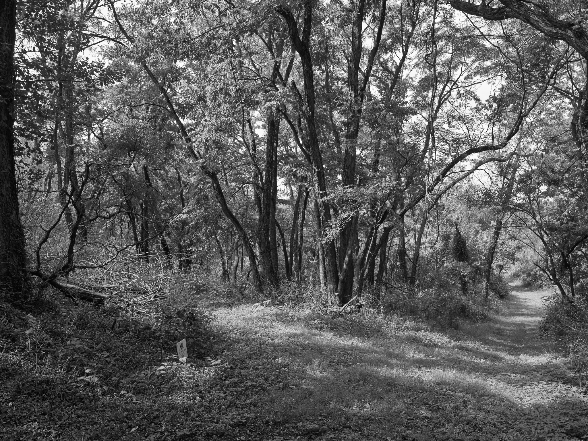
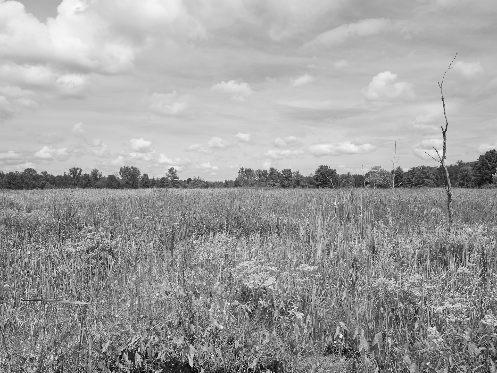

Public Lands Institute
Map
Images
Archive
About
Support
Spring Valley Wildlife Area
OH

Spring Valley Wildlife Area 1 · 2026-09-11
_DSF4633.jpg

Spring Valley Wildlife Area 2 · 2026-09-11
_DSF4636.jpg

Spring Valley Wildlife Area 3 · 2026-09-11
_DSF4640.jpg

Spring Valley Wildlife Area 4 · 2026-09-11
_DSF4641.jpg

Spring Valley Wildlife Area 5 · 2026-09-11
_DSF4647.jpg
View all 5 images →
← Miamisburg Mound
Huffman Prairie Flying Field →